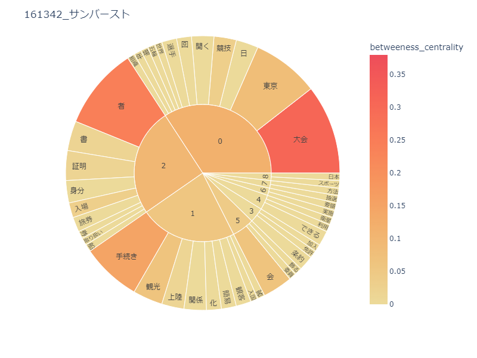
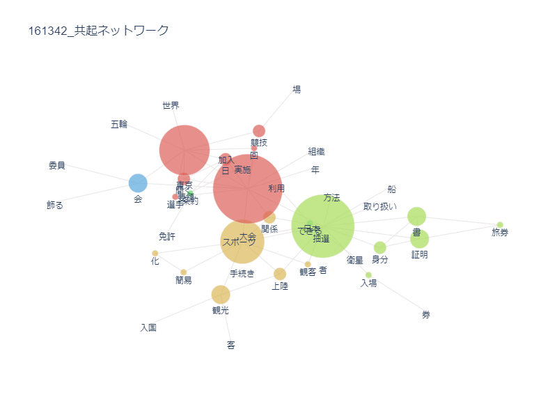
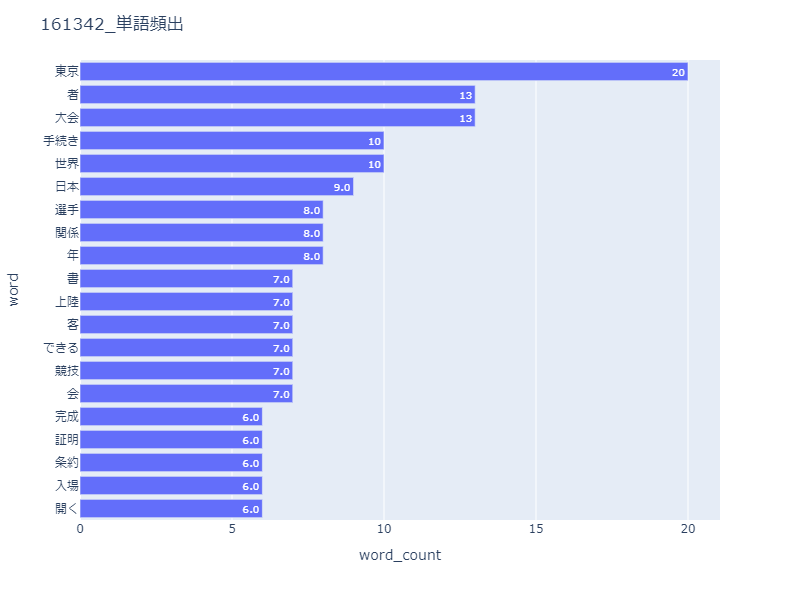
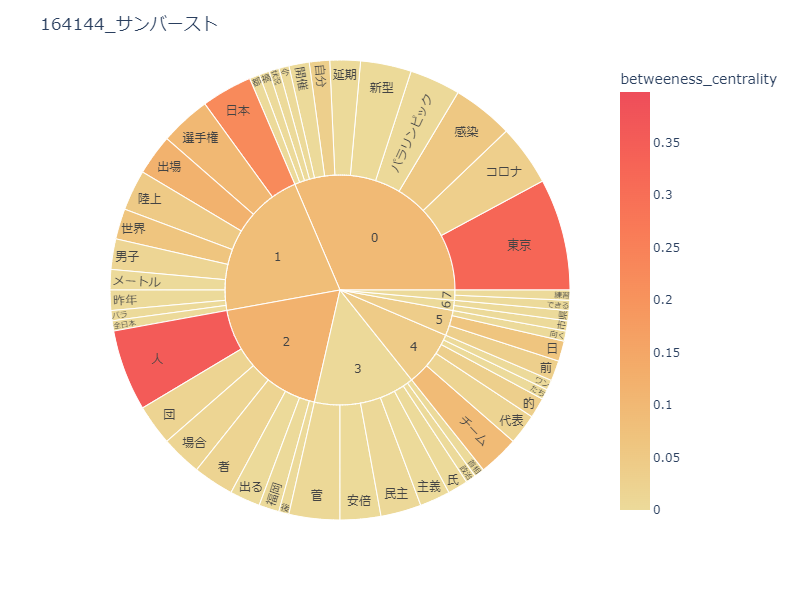
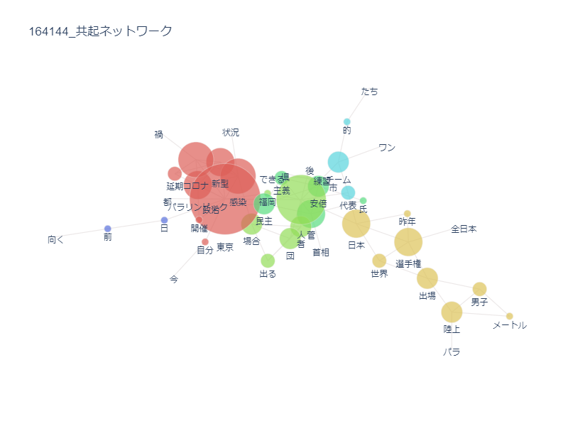
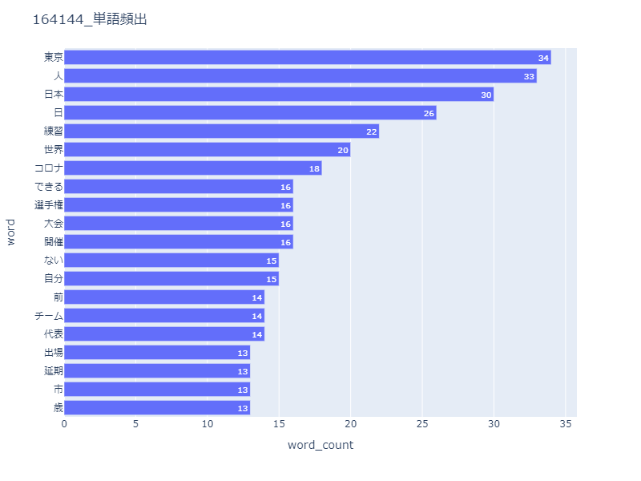

第八回
テキストマイニング
1964年と2021年に行われた東京オリンピックに関して、
新聞記事で多く使われた単語をpythonで分析し、それぞれどのような特徴があるか調べた。
1964年
・サンバースト

・共起ネットワーク

・単語頻出

1964年の記事では、東京や観光などありきたりな単語ばかりが目立った。
2020年(2021)
・サンバースト

・共起ネットワーク

・単語頻出

1964年とは大きく異なり、東京五輪2020(2021)では、コロナや感染、延期など、
世界的な感染症によりオリンピック開催が１年遅れたことを中心とした単語が多かった。
また、阿部や菅、民主主義など、政治的な単語も目立っている。
デザイン演習Ⅰ・Ⅱトップページ
XBPTOP